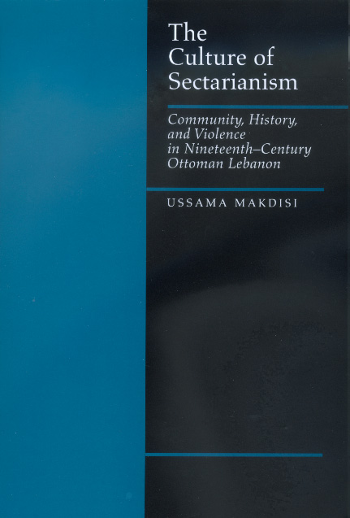
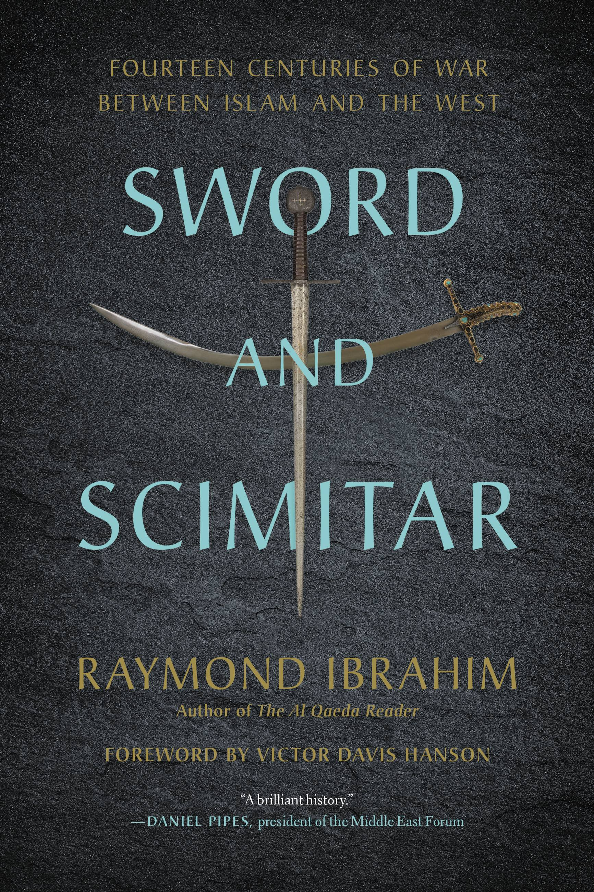
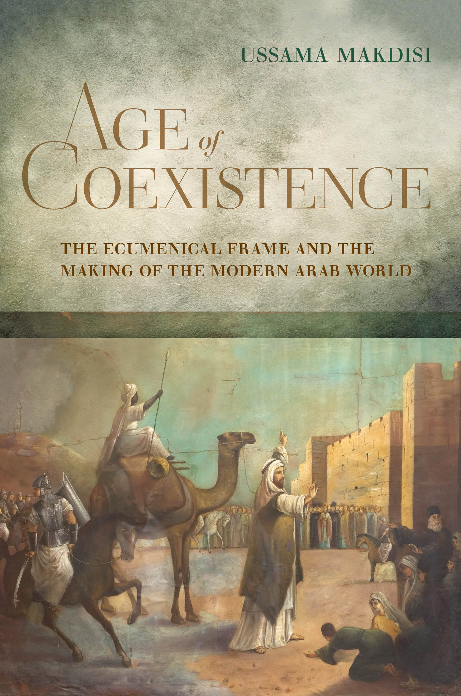

46:34 · 13 OPERE
Come ci si può mantenere saldi in un'epoca stravolta?
Il filo del discorso
La domanda iniziale riguarda la possibilità di conservare un orientamento personale in un tempo che Dr Divago giudica dominato dalla falsificazione. La risposta proposta è il ritorno a libri scelti con cura, a partire dai diari di Victor Klemperer e dall’esperienza della ricerca bibliografica. Il contributo passa poi a una polemica sulle università americane, prendendo spunto da un’audizione congressuale sull’antisemitismo.
Leggi la sintesi completaRiduci la sintesi
Al centro è la definizione di Ussama Makdisi come studioso, contestata dal relatore attraverso titoli e presentazioni di alcuni suoi libri. Dr Divago dichiara, per parte di questi volumi, di non averli letti: la scheda distingue quindi la sua interpretazione dai temi effettivamente documentati nei cataloghi editoriali. Norman Cohn, Fanon, testi religiosi e scritti ideologici introducono la richiesta di analisi critiche; il libro di Raymond Ibrahim accompagna una digressione sulla storia religiosa del Mediterraneo. L’ultima parte torna a violenza, manipolazione e responsabilità verso i giovani. Le accuse rivolte a persone, istituzioni e correnti culturali restano attribuite al relatore e non sono presentate come fatti accertati.
I libri nel discorso

Testimoniare fino all’ultimo. Diari 1933–1945
Identificazione probabile
Note sul riferimento
Copertina: Mondadori, Le scie, 2000, a cura di Walter Nowojski, edizione italiana a cura di Anna Ruchat e Paola Quadrelli, prefazione di Cesare Segre; ISBN 9788804422938.
Immagine autentica dell’opera, controllata visivamente; l’edizione di riferimento non è attribuita al filmato.
Victor Klemperer e i diari scritti dal nazismo alla catastrofe; raccolta precisa non nominata.

Licenza per un genocidio
Note sul riferimento
Copertina: Castelvecchi · 2015
Copertina autentica controllata visivamente. Edizione di riferimento; non identifica l’esemplare usato o citato nel video.
Norman Cohn e Licenza per un genocidio, con titolo inglese ricordato in forma inesatta.

I Protocolli dei savi di Sion (falso antisemita)
Note sul riferimento
Copertina storica di un falso antisemita: The Jewish Peril · Londra, Eyre & Spottiswoode · 1920
Fotografia museale della copertina dell’edizione inglese del 1920, conservata dall’USHMM. È mostrata come documento storico di propaganda, senza attribuire questa edizione al video o avallare le sue falsificazioni.
I Protocolli nel contesto della dimostrazione della loro falsificazione.

Mein Kampf
Note sul riferimento
Copertina: Hitler, Mein Kampf. Eine kritische Edition, Institut für Zeitgeschichte, 2016, due volumi, a cura di Christian Hartmann, Thomas Vordermayer, Othmar Plöckinger e Roman Töppel; ISBN 9783981405231.
Immagine autentica della copertina grigia dell’edizione critica dell’Institut für Zeitgeschichte. Si tratta di un’opera in due volumi: l’immagine piana di copertina non è dichiarata fotografia completa dei due volumi né edizione originale nazista. La ristampa precisa illustrata non è attribuita dal solo ISBN.
Mein Kampf nominato fra i testi da sottoporre ad analisi critica.
Malleus Maleficarum (Il martello delle streghe)
Note sul riferimento
Copertina: The Hammer of Witches: A Complete Translation of the Malleus Maleficarum, traduzione di Christopher S. Mackay, Cambridge University Press, paperback 2009, 664 pagine; ISBN 9780521747875.
Copertina autentica della traduzione commentata inglese Cambridge 2009, nella quale Christopher S. Mackay è il traduttore e studioso dell’opera. Il nome in copertina non viene scambiato con quello dell’autore medievale; nessuna edizione è attribuita al video.
Malleus Maleficarum nominato esplicitamente.

Corano
Note sul riferimento
Copertina: BUR Classici, edizione aggiornata
Edizione con introduzione, traduzione e commento di Alessandro Bausani, a cura di Layla Mustapha Ammar. Anno della ristampa non dedotto dalla copertina; nessuna edizione attribuita al video.
Corano nominato esplicitamente come testo da discutere.

The Critical Qur’an. Explained from Key Islamic Commentaries and Contemporary Historical Research
Identificazione probabile
Note sul riferimento
Copertina: Bombardier Books / Post Hill Press, hardcover ISBN 9781642939491, uscita catalogata 3 maggio 2022, 560 pagine; alcuni cataloghi riportano copyright 2021.
Immagine autentica dell’opera, controllata visivamente; l’edizione di riferimento non è attribuita al filmato.
Corano di Spencer: identificazione probabile del commento The Critical Qur’an, titolo non pronunciato.

I dannati della terra
Note sul riferimento
Copertina: Einaudi, Piccola Biblioteca Einaudi nuova serie, 2007, a cura di Liliana Ellena, traduzione di Carlo Cignetti, prefazione di Jean-Paul Sartre; ISBN 9788806185473.
Immagine autentica dell’opera, controllata visivamente; l’edizione di riferimento non è attribuita al filmato.
I dannati della terra di Fanon, titolo e autore espliciti.

The Culture of Sectarianism. Community, History, and Violence in Nineteenth-Century Ottoman Lebanon
Note sul riferimento
Copertina: University of California Press, luglio 2000, paperback, 274 pagine; ISBN 9780520218468.
Immagine autentica dell’opera, controllata visivamente; l’edizione di riferimento non è attribuita al filmato.
Titolo e sottotitolo resi in italiano, autore e data 2000 riconoscibili.
Memory and Violence in the Middle East and North Africa
Note sul riferimento
Copertina: Indiana University Press, marzo 2006, paperback, 256 pagine; ISBN 9780253217981.
Immagine autentica dell’opera, controllata visivamente; l’edizione di riferimento non è attribuita al filmato.
Titolo in traduzione, 2006, Makdisi e Silverstein come curatori.
Artillery of Heaven. American Missionaries and the Failed Conversion of the Middle East
Note sul riferimento
Copertina: Cornell University Press, edizione eBook ISBN 9780801457746; uscita originale cartacea 2008, ISBN 9780801446214. Il catalogo digitale distingue ristampe e formati.
Immagine autentica dell’opera, controllata visivamente; l’edizione di riferimento non è attribuita al filmato.
Artiglieria del cielo, missionari americani e conversione fallita del Medio Oriente: titolo e sottotitolo riconoscibili.

Sword and Scimitar. Fourteen Centuries of War between Islam and the West
Note sul riferimento
Copertina: Hachette Book Group / Grand Central Publishing, trade paperback, 25 agosto 2020, 352 pagine, prefazione di Victor Davis Hanson; ISBN 9780306921421.
Immagine autentica dell’opera, controllata visivamente; l’edizione di riferimento non è attribuita al filmato.
La scimitarra e la spada di Ibrahim, identificato il titolo inglese dal nome dell’autore.

Age of Coexistence. The Ecumenical Frame and the Making of the Modern Arab World
Note sul riferimento
Copertina: University of California Press, paper, settembre 2021, 312 pagine, ISBN 9780520385764; prima uscita hardcover ottobre 2019, ISBN 9780520258884.
Copertina autentica fornita dall’editore nel file ISBN 9780520385764, relativo all’edizione paper del 2021. Distinta dall’uscita hardcover del 2019 citata nel parlato. Le vecchie pagine UCP restituivano soltanto un logo generico, respinto; nessun formato mostrato nel video è stato identificato.
L’età della coesistenza, cornice ecumenica e costruzione del mondo arabo moderno, 2019, UCP.